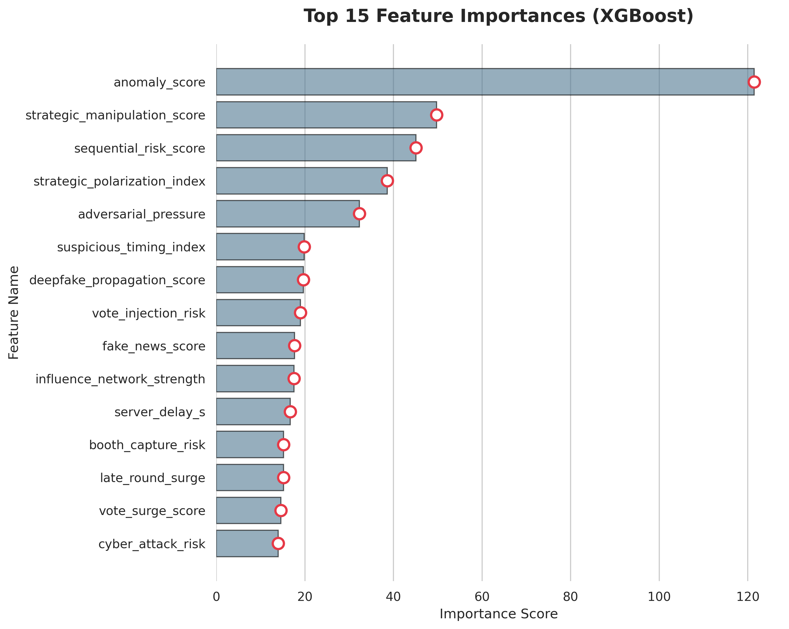

Problem Statement
This project investigates the performance differences between XGBoost and a PyTorch-based MLP on a structured binary classification task. The goal is to evaluate whether deep learning provides meaningful performance gains over gradient boosting methods on tabular data.
Dataset
The dataset consists of engineered tabular features representing structured risk and behavioral indicators. The target variable is binary classification. The feature space includes both raw variables and composite risk scores designed to capture nonlinear interactions.
Methodology
A supervised learning pipeline was implemented including preprocessing, train-test splitting, and model training. Two primary models were evaluated: XGBoost and a PyTorch Multi-Layer Perceptron (MLP). Both models were tuned and evaluated under identical data conditions to ensure fair comparison.
Model Comparison / Results
Both models were evaluated using classification reports, ROC-AUC curves, precision-recall analysis, and decision threshold tuning. Performance across all metrics was closely aligned, with no significant or consistent advantage observed for either model.

Key Findings
Both models converge to similar decision boundaries on structured data. XGBoost shows slightly better interpretability through gain-based feature importance, while the MLP offers no significant predictive advantage in this context. Feature engineering has a stronger impact on performance than model complexity.
Challenges & Limitations
The dataset structure limits the potential advantage of deep learning models. Both models exhibit similar performance ceilings, suggesting constrained feature separability. MLP interpretability is indirect and computationally more expensive compared to tree-based methods.